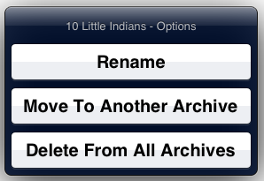
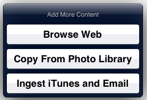
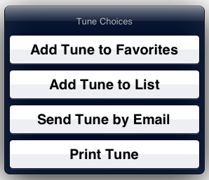

Top Navigation Buttons
Bottom Navigation Buttons
Full Screen Taps and Swipes
Content Support
Search
Choose any tune from any archive. Either use the letter index on the right and scroll, or type the first few characters of the tune name to see a list of approximate tune matches. The entire tunes database is selected for traversal.
Archives
Choose an archive. Once chosen, the archive can be searched - either use the letter index on the right and scroll, or type the first few characters of the tune name to see a list of approximate tune matches. The chosen archive is selected for traversal.
Set Lists
Choose a setlist. Once chosen, the setlist can be searched - either use the letter index on the right and scroll, or type the first few characters of the tune name to see a list of approximate tune matches. The chosen setlist is selected for traversal.
Set List 1
Display tunes on the first setlist. The chosen setlist is selected for traversal.
Set List 2
Display tunes on the second setlist. The chosen setlist is selected for traversal.
Set List 3
Display tunes on the third setlist. The chosen setlist is selected for traversal.
Favorite Tunes
Display favorite tunes. The favorites list is selected for traversal.
Recently Played Tunes
Display recently viewed tunes. The recents list is selected for traversal.
Now Displaying
The button top shows the name of the tune that is currently being viewed. When pressed, it displays a menu of tune management choices:
- Rename - to change the tune's title.
- Move Tune - to another archive.
- Delete Tune - from all archives. A tune can not be deleted from a single archive.
Now Scanning
The button top shows the name of the list or archive or 'all tunes'. When moving thru tunes by swiping or using the arrow buttons, this is the list that will be traversed. When the button is pressed, this help file is displayed.
Import Content
Adding content to BigStand is easy:
- Browse the web - and take a screenshot of interesting content.
- Copy a photo from the photo library - in a pinch you can always take a picture of content and add it immediately.
- Ingest iTunes and Email - you can drag files into the BigStand section of iTunes > Apps > File Sharing. Or, you can open email with attached files (or open BigStand compatible files in other apps). In either case you'll need to hit this button to get BigStand to process any files.
Print and Email 
Build lists of tunes, and share tunes with your bandmates.
- Add Tune to Favorites - adds the current tune to your list of Favorites.
- Add Tune to List - adds the current tune to any Set List.
- Send Tune by Email - sends the current tune via email. The tune is sent as originally loaded in BigStand.
- Print Tune - choose a printer for hardcopy of the current tune.
Previous Tune
Step to the previous tune on the current list of tunes.
Fullscreen
Enter fullscreen mode. Triple tap to return to normal mode. Swipe left or right to traverse the current list.
Select Version
Step thru the different versions of this tune across all archives.
Next Tune
Step to the next tune on the current list of tunes.
Adding Content to BigStand
Most new files added to BigStand add one tune to your repository. Adding a .zip file will add many tunes.
Adding New Tunes via Email
On your device, in either IOS Mail, or Gmail, a long press on a mail attachment brings up a popup that let's you select BigStand as the app to open. The associated file is assimilated directly into the OnTheFly-Archive.
Adding New Tunes via iTunes
When tethered to your computer, you can open iTunes on your Windows or OSX computer and go to Apps>File Sharing>BigStand. You will see a window with a single folder named DONOTDISTURB.
Do not alter that folder but instead you can drag any files you want to add to your device into the outer window, or use the Open button. To assimilate these files directly into the OnTheFly-Archive, go to the app, press the "import tunes" button and select "Ingest iTunes and Email".Adding a Photo
A quick photo of a single piece of sheet music is sometimes all you need. Any photo in your device’s photo album can be selected, cropped and inserted into the OnTheFly-Archive.
Adding a Web SnapShot
Take a screen capture of anything you find on the web, just the way you need it and without the ads. The capture is inserted into the OnTheFly-Archive.
Adding New Archives Via Email or iTunes
An archive is just a zip file with some extra optional data. For the simplest possible archive just create a folder, move all your documents into the folder, add an optional file named --logo--.png or --logo--.jpg, and zip it up from inside the folder. Rename the zip file to something sensible like MyOwnBand-archive123.zip ; only the first part of the name will typically be displayed.
Incoming Document Type Support
You add more content to BigStand via email with attachments, by iTunes FileSharing, or downloading from the Internet.
| Type | Stored As | Displayed As |
|---|---|---|
| HTML | As received with supplied Tune Title. | displays in pdf viewer in webview |
| As received with supplied Tune Title. | displays in pdf viewer in webview | |
| DOC | As received with supplied Tune Title. | displayed as is in webview, autoscroll |
| RTF | As received with supplied Tune Title. | displayed as is in webview, autoscroll |
| TXT | As received with supplied Tune Title. | wrapped, rewritten into HTML,displays in webview |
| PNG | As received with supplied Tune Title. | wrapped in HTML, displayed in webview |
| JPEG | As received with supplied Tune Title. | wrapped in HTML, displayed in webview |
| GIF | As received with supplied Tune Title. | wrapped in HTML, displayed in webview |
| STL | A new setlist is created. | displays in standard Viewer frame |
| ZIP | Full Unzipped Tree Is Stored into a new archive. | Only top level directory is indexed by Tune Title. |